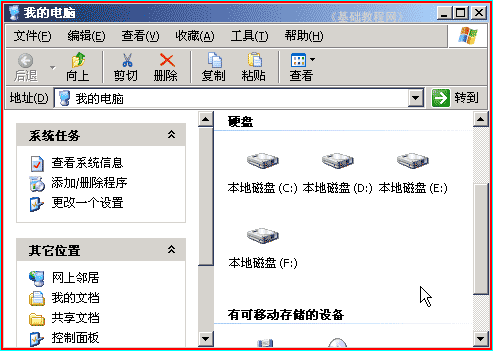
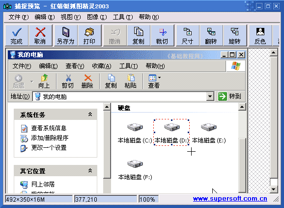
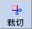
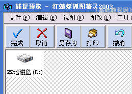
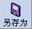
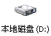

抓图基础入门教程
四、截取图片 返回
有时候只是需要抓取图片中的一部分，这时候可以先全部抓取，然后再进行选择，下面我们来看一个练习；
1、运行软件
1）点击桌面上的“红蜻蜓抓图”图标，自动缩小到任务栏中；
2）捕捉方法是按组合键 Ctrl＋J （按住Ctrl键不松，再按一下字母J，然后再松开两个）就可以开始捕捉，
出来一个红线圈住的方框，这就是捕捉区域了，点左键捕捉，点右键退出；
2、捕捉窗口
1）在桌面上双击“我的电脑”图标，打开窗口，如果窗口太大，可以适当缩小一些；
2）把鼠标移到窗口内，左手安装Ctrl键不松，右手按一下 J 键开始捕捉，出来一个红线框，
把鼠标手形指针，移到窗口上边的蓝色标题栏上，红线框住整个窗口，
按一下鼠标左键，可以听到清脆的一声，捕获成功；

3）捕获的图像显示在一个编辑窗口中，把鼠标移入窗口内，变成一个十字形光标，
瞄准“本地磁盘(D:)”的左上角，按住鼠标左键不松，向右下角拖动，画一个方框把“本地磁盘(D:)”选中；

4）点工具栏上的“复制”按钮，把图像复制到剪贴板中，
再点工具栏上的“裁切”按钮，把其他部分去掉；

5）点工具栏上的“另存为”按钮，
在保存对话框中，找到自己的文件夹，保存类型为gif格式，把文件名改成“截取图片”，然后点右边的保存按钮；
本节学习了捕捉窗口并保存图像的基本方法，如果你成功地完成了练习，请继续学习下一课内容；

本教程由86团学校TeliuTe制作|著作权所有
基础教程网：http://teliute.org/
美丽的校园……
转载和引用本站内容，请保留版权信息和本站链接。